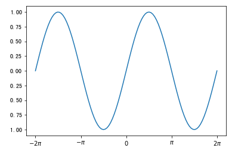
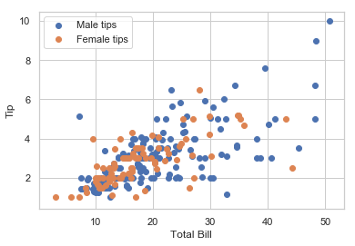

%matplotlib inline
import matplotlib.pyplot as plt
from matplotlib.font_manager import _rebuild
_rebuild()
plt.rcParams['font.sans-serif'] = [u'SimHei']
chi = [56, 78, 87, 87, 75, 67, 90]
eng = [67, 87, 99, 89, 80, 90, 67]
mat = [98, 84, 86, 98, 98, 90, 84]
index = range(len(chi))
plt.plot(index, chi)
plt.plot(index, eng)
plt.plot(index, mat)
plt.xticks([i for i in range(len(chi))],
['平時考1', '平時考2', '平時考3', '平時考4', '平時考5', '期中考', '期末考'])
plt.ylim((0,120))
plt.show()
%matplotlib inline
import matplotlib.pyplot as plt
chi = [56, 78, 87, 87, 75, 67, 90]
eng = [67, 87, 99, 89, 80, 90, 67]
mat = [98, 84, 86, 98, 98, 90, 84]
index = range(len(chi))
plt.plot(index, chi)
plt.plot(index, eng)
plt.plot(index, mat)
plt.show()
%matplotlib inline
import matplotlib.pyplot as plt
import numpy as np
x = np.linspace(-2*np.pi, 2*np.pi, 100)
plt.plot(x, np.sin(x))
plt.plot(x, np.cos(x))
plt.show()
import numpy as np
x = [1, 2, 3, 4, 5]
y = [2, 4, 6, 8, 10]
np_x = np.array([1, 2, 3, 4, 5])
np_y = np.array([2, 4, 6, 8, 10])
print(x+y)
# print(x*y) #執行這行會出現錯誤
print(np_x + np_y)
print(np_x * np_y)
[1, 2, 3, 4, 5, 2, 4, 6, 8, 10]
[ 3 6 9 12 15]
[ 2 8 18 32 50]
%matplotlib inline
import matplotlib.pyplot as plt
import numpy as np
x = np.linspace(-2*np.pi, 2*np.pi, 100)
plt.ylim((-1.2, 1.2))
plt.plot(x, np.sin(x), label="SIN", linestyle="--")
plt.plot(x, np.cos(x), label="COS", color="red")
plt.xticks([-2*np.pi, -np.pi, 0, np.pi, 2*np.pi],
[r'$-2\pi$', r'$-\pi$', r'$0$', r'$\pi$', r'$2\pi$'])
plt.legend()
ax = plt.gca()
ax.spines['right'].set_color('none')
ax.spines['top'].set_color('none')
ax.spines['left'].set_position(('data', 0))
ax.spines['bottom'].set_position(('data', 0))
plt.show()
%matplotlib inline
import matplotlib.pyplot as plt
import numpy as np
x = np.linspace(-2*np.pi, 2*np.pi, 100)
plt.figure()
plt.xticks([-2*np.pi, -np.pi, 0, np.pi, 2*np.pi],
[r'$-2\pi$', r'$-\pi$', r'$0$', r'$\pi$', r'$2\pi$'])
plt.plot(x, np.sin(x))
plt.figure()
plt.xticks([-2*np.pi, -np.pi, 0, np.pi, 2*np.pi],
[r'$-2\pi$', r'$-\pi$', r'$0$', r'$\pi$', r'$2\pi$'])
plt.plot(x, np.cos(x))
plt.show()

%matplotlib inline
import matplotlib.pyplot as plt
import numpy as np
x = np.linspace(0, 2*np.pi, 100)
plt.subplot(2, 2, 1)
plt.plot(np.cos(2*x), np.sin(3*x))
plt.subplot(2, 2, 2)
plt.xticks([0, np.pi, 2*np.pi],
[r'$0$', r'$\pi$', r'$2\pi$'])
plt.plot(x, np.sin(3*x))
plt.subplot(2, 2, 3)
plt.xticks([0, np.pi, 2*np.pi],
[r'$0$', r'$\pi$', r'$2\pi$'])
plt.plot(x, np.cos(2*x))
plt.show()
#散點圖範例一
%matplotlib inline
import matplotlib.pyplot as plt
import numpy as np
plt.xlim(-3, 3)
plt.ylim(-3, 3)
x1 = np.random.normal(0, 1, 1024)
y1 = np.random.normal(0, 1, 1024)
plt.scatter(x1, y1, alpha=0.3)
plt.show()
#散點圖範例二
%matplotlib inline
import matplotlib.pyplot as plt
import numpy as np
minutes = [45, 34, 56, 77, 90, 90, 90, 34, 45, 44, 80, 15, 10, 12]
scores = [90, 80, 100, 65, 5, 30, 55, 100, 90, 80, 60, 5, 0, 10]
plt.xlabel('解題時間')
plt.ylabel('分數')
plt.scatter(minutes, scores)
plt.show()
#直方圖
%matplotlib inline
import matplotlib.pyplot as plt
minutes = [45, 34, 56, 77, 90, 90, 90, 34, 45, 44, 80, 15, 10, 12]
scores = [90, 80, 100, 65, 5, 30, 55, 100, 90, 80, 60, 5, 0, 10]
plt.figure()
plt.xlabel('解題時間(分)')
plt.ylabel('人數')
plt.hist(minutes, bins=4, edgecolor='white', linewidth=1.2)
plt.figure()
plt.xlabel('分數')
plt.ylabel('人數')
plt.hist(scores, bins=4, color='red', edgecolor='white', linewidth=1.2)
plt.show()
#圓餅圖
%matplotlib inline
import matplotlib.pyplot as plt
import numpy as np
toyota = [8, 4, 3]
lexus = [0, 2, 10]
mazda = [5, 4, 1]
subaru = [3, 6, 0]
labels = ['<100', '100~149', '>=150']
plt.subplot(2,2,1)
plt.pie(toyota, radius=1.2, labels=labels, shadow=True)
plt.title('Toyota')
plt.subplot(2,2,2)
plt.pie(lexus, radius=1.2, labels=labels, shadow=True)
plt.title('Lexus')
plt.subplot(2,2,3)
plt.pie(mazda, radius=1.2, labels=labels, shadow=True)
plt.title('Mazda')
plt.subplot(2,2,4)
plt.pie(subaru, radius=1.2, labels=labels, shadow=True)
plt.title('Subaru')
plt.show()
%matplotlib inline
import matplotlib.pyplot as plt
import numpy as np
lexus_models = {
'CT-200h': 139,
'ES': 167,
'GS': 221,
'IS': 173,
'LC': 539,
'LS': 337,
'LX': 465,
'NX': 155,
'RC': 243,
'RX': 224,
'RX L': 260,
'UX': 139
}
lexus_prices = np.array(list(lexus_models.values()), dtype=np.int64)
lexus = list()
lexus.append(np.count_nonzero(lexus_prices<=150))
lexus.append(np.count_nonzero((lexus_prices>150)&(lexus_prices<=200)))
lexus.append(np.count_nonzero((lexus_prices>200)&(lexus_prices<=300)))
lexus.append(np.count_nonzero(lexus_prices>300))
labels = ['<=150', '151~200', '201~300', '>300']
explode = [0.2, 0, 0, 0]
plt.pie(lexus, explode=explode, autopct='%1.0f%%',
radius=2.0, labels=labels, shadow=True)
plt.title('Lexus Models Prices')
plt.show()
#長條圖範例
%matplotlib inline
import matplotlib.pyplot as plt
ranking = {
'Toyota RAV4': 2958,
'CMC Veryca': 1312,
'Nissan Kicks': 1267,
'Honda CRV': 1209,
'Toyota Sienta': 1163,
'Toyota Yaris': 936,
'Toyota': 911,
'Ford Focus': 873,
'M-Benz C-Class': 749,
'Honda HR-V':704
}
plt.bar(range(len(ranking.values())),
ranking.values(), width=0.8)
plt.xticks(range(len(ranking.values())),
ranking.keys(), rotation=45)
plt.show()
%matplotlib inline
import matplotlib.pyplot as plt
import seaborn as sns
sns.set()
ranking = {
'Toyota RAV4': 2958,
'CMC Veryca': 1312,
'Nissan Kicks': 1267,
'Honda CRV': 1209,
'Toyota Sienta': 1163,
'Toyota Yaris': 936,
'Toyota': 911,
'Ford Focus': 873,
'M-Benz C-Class': 749,
'Honda HR-V':704
}
plt.bar(range(len(ranking.values())),
ranking.values(), width=0.8)
plt.xticks(range(len(ranking.values())),
ranking.keys(), rotation=45)
plt.show()
import seaborn as sns
sns.get_dataset_names()
d:\Anaconda3\lib\site-packages\seaborn\utils.py:376: UserWarning: No parser was explicitly specified, so I'm using the best available HTML parser for this system ("lxml"). This usually isn't a problem, but if you run this code on another system, or in a different virtual environment, it may use a different parser and behave differently.
The code that caused this warning is on line 376 of the file d:\Anaconda3\lib\site-packages\seaborn\utils.py. To get rid of this warning, pass the additional argument 'features="lxml"' to the BeautifulSoup constructor.
gh_list = BeautifulSoup(http)
['anscombe',
'attention',
'brain_networks',
'car_crashes',
'diamonds',
'dots',
'exercise',
'flights',
'fmri',
'gammas',
'iris',
'mpg',
'planets',
'tips',
'titanic']
%matplotlib inline
import seaborn as sns
tips = sns.load_dataset("tips")
print(tips.shape)
print(tips.head())
(244, 7)
total_bill tip sex smoker day time size
0 16.99 1.01 Female No Sun Dinner 2
1 10.34 1.66 Male No Sun Dinner 3
2 21.01 3.50 Male No Sun Dinner 3
3 23.68 3.31 Male No Sun Dinner 2
4 24.59 3.61 Female No Sun Dinner 4
%matplotlib inline
import seaborn as sns
import matplotlib.pyplot as plt
sns.set()
tips = sns.load_dataset("tips")
plt.scatter(tips.total_bill, tips.tip)
plt.xlabel("Total Bill")
plt.ylabel("Tip")
plt.show()
%matplotlib inline
import seaborn as sns
import matplotlib.pyplot as plt
sns.set(style="whitegrid")
tips = sns.load_dataset("tips")
male_tips = tips[tips.sex=='Male']
female_tips = tips[tips.sex=='Female']
plt.scatter(male_tips.total_bill, male_tips.tip, label="Male tips")
plt.scatter(female_tips.total_bill, female_tips.tip, label="Female tips")
plt.xlabel("Total Bill")
plt.ylabel("Tip")
plt.legend()
plt.show()

%matplotlib inline
import seaborn as sns
tips = sns.load_dataset("tips")
sns.catplot(x='day', y='tip', data=tips)
<seaborn.axisgrid.FacetGrid at 0x2330e11fb70>

%matplotlib inline
import seaborn as sns
titanic = sns.load_dataset("titanic")
print(titanic.head())
survived pclass sex age sibsp parch fare embarked class \
0 0 3 male 22.0 1 0 7.2500 S Third
1 1 1 female 38.0 1 0 71.2833 C First
2 1 3 female 26.0 0 0 7.9250 S Third
3 1 1 female 35.0 1 0 53.1000 S First
4 0 3 male 35.0 0 0 8.0500 S Third
who adult_male deck embark_town alive alone
0 man True NaN Southampton no False
1 woman False C Cherbourg yes False
2 woman False NaN Southampton yes True
3 woman False C Southampton yes False
4 man True NaN Southampton no True
%matplotlib inline
import seaborn as sns
titanic = sns.load_dataset("titanic")
sns.countplot(x = 'class', hue = 'survived', data = titanic)
<matplotlib.axes._subplots.AxesSubplot at 0x2330e081940>
%matplotlib inline
import seaborn as sns
titanic = sns.load_dataset("titanic")
sns.countplot(x = 'sex', hue = 'survived', data = titanic)
<matplotlib.axes._subplots.AxesSubplot at 0x2330df17e10>
%matplotlib inline
import matplotlib.pyplot as plt
import xlrd
book = xlrd.open_workbook('election_2018.xls')
sheet = book.sheet_by_index(0)
for row in range(10):
print(sheet.row_values(row))
['地區', '姓名', '號次', '性別', '出生年次', '推薦政黨', '得票數', '得票率', '當選註記', '是否現任']
['臺北市', '吳蕚洋', '1', '男', '1960', '無黨籍及未經政黨推薦', 5611.0, 0.0039000000000000003, ' ', '否']
['', '丁守中', '2', '男', '1954', '中國國民黨', 577096.0, 0.4081, ' ', '否']
['', '姚文智', '3', '男', '1965', '民主進步黨', 244342.0, 0.1728, ' ', '否']
['', '柯文哲', '4', '男', '1959', '無黨籍及未經政黨推薦', 580663.0, 0.4106, '*', '是']
['', '李錫錕', '5', '男', '1947', '無黨籍及未經政黨推薦', 6158.0, 0.0043, ' ', '否']
['高雄市', '韓國瑜', '1', '男', '1957', '中國國民黨', 892545.0, 0.5386, '*', '否']
['', '陳其邁', '2', '男', '1964', '民主進步黨', 742239.0, 0.44789999999999996, ' ', '否']
['', '璩美鳳', '3', '女', '1966', '無黨籍及未經政黨推薦', 7998.0, 0.0048, ' ', '否']
['', '蘇盈貴', '4', '男', '1958', '無黨籍及未經政黨推薦', 14125.0, 0.0085, ' ', '否']
%matplotlib inline
import matplotlib.pyplot as plt
import xlrd
book = xlrd.open_workbook('election_2018.xls')
sheet = book.sheet_by_index(0)
rows = sheet.nrows
table = list()
for row in range(rows):
table.append(sheet.row_values(row))
for row in range(rows):
if table[row][0] == '':
table[row][0] = table[row-1][0]
tainan = dict()
for row in range(rows):
if table[row][0] == '臺南市':
tainan[table[row][1]] = table[row][6]
print(tainan)
plt.bar(range(len(tainan)), tainan.values(), facecolor="#99ccff")
plt.xticks(range(len(tainan)), tainan.keys())
plt.ylim((0, 400000))
for x, y in zip(range(len(tainan)), tainan.values()):
plt.text(x-0.05, y+5000, "{:>8,.0f}".format(y), ha='center')
plt.rcParams['font.sans-serif'] = [u'SimHei']
plt.show()
{'黃偉哲': 367518.0, '高思博': 312874.0, '林義豐': 84153.0, '許忠信': 45168.0, '陳永和': 117179.0, '蘇煥智': 39778.0}
%matplotlib inline
import matplotlib.pyplot as plt
from wordcloud import WordCloud
from PIL import Image
import numpy as np
f = open('eduheadlines.txt','r', encoding='utf-8').read()
mask = np.array(Image.open('star.jpg'))
wordcloud = WordCloud(background_color="white",
width=1000, height=860,
margin=2, font_path="simhei.ttf",
mask=mask).generate(f)
plt.figure(figsize=(10,10))
plt.imshow(wordcloud)
plt.axis("off")
plt.show()
%matplotlib inline
import sqlite3
import matplotlib.pyplot as plt
from wordcloud import WordCloud
from PIL import Image
import numpy as np
dbfile = "applenews.db"
conn = sqlite3.connect(dbfile)
sql_str = "select * from news;"
rows = conn.execute(sql_str)
all_news = ""
for row in rows:
all_news += row[3]
mask = np.array(Image.open('cloud.jpg'))
wordcloud = WordCloud(background_color="white",
width=1000, height=860,
margin=2, font_path="simhei.ttf",
mask=mask).generate(all_news)
plt.figure(figsize=(10,10))
plt.imshow(wordcloud)
plt.axis("off")
plt.show()
# stopWords.txt is from https://github.com/tomlinNTUB/Python-in-5-days
%matplotlib inline
import sqlite3
import matplotlib.pyplot as plt
from wordcloud import WordCloud
from PIL import Image
import numpy as np
import jieba
from collections import Counter
dbfile = "applenews.db"
conn = sqlite3.connect(dbfile)
sql_str = "select * from news;"
rows = conn.execute(sql_str)
all_news = ""
for row in rows:
all_news += row[3]
stopwords = list()
with open('stopWords.txt', 'rt', encoding='utf-8') as fp:
stopwords = [word.strip() for word in fp.readlines()]
keyterms = [keyterm for keyterm in jieba.cut(all_news) if keyterm not in stopwords]
text = ",".join(keyterms)
mask = np.array(Image.open('cloud.jpg'))
wordcloud = WordCloud(background_color="white",
width=1000, height=860,
margin=2, font_path="simhei.ttf",
mask=mask).generate(text)
plt.figure(figsize=(10,10))
plt.imshow(wordcloud)
plt.axis("off")
plt.show()